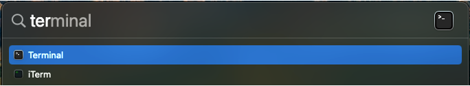
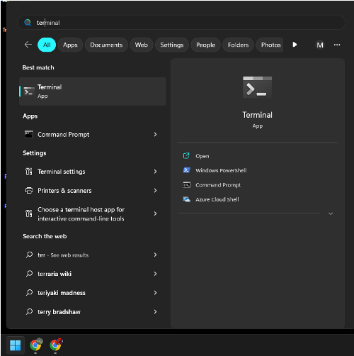
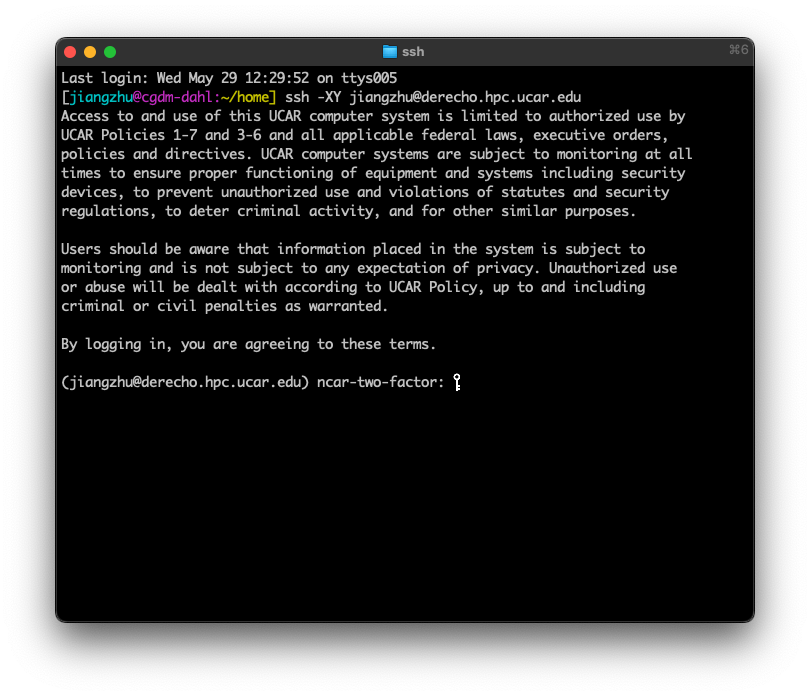
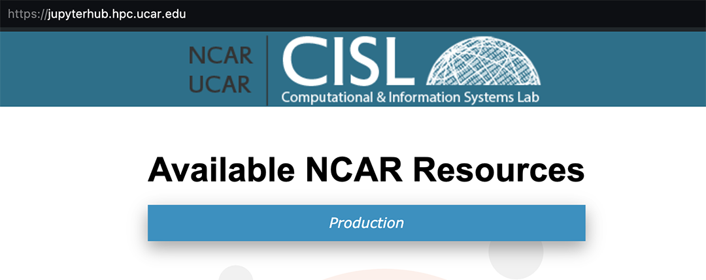
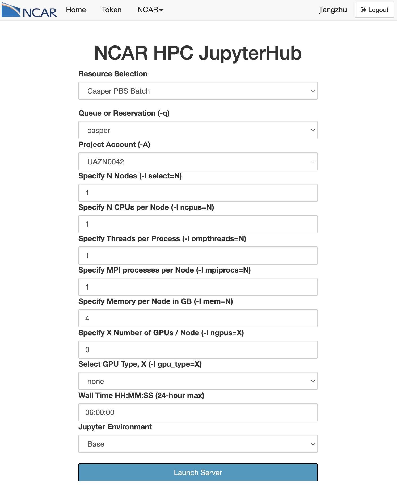
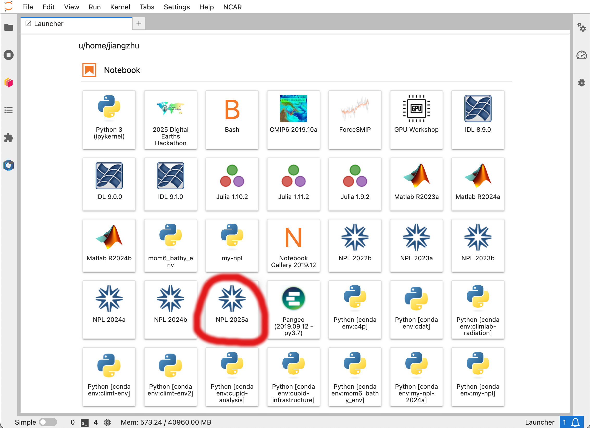

0.3 Introduction to NCAR Supercomputing#
Tutorial at the 2025 paleoCAMP | June 16–June 30, 2025
Jiang Zhu
jiangzhu@ucar.edu
Climate & Global Dynamics Laboratory
NSF National Center for Atmospheric Research
Learning Objectives#
Learn to connect and use NCAR computing resources: Derecho and JupyterHub
Time to learn: 10 minutes
NSF NCAR Advanced Research Computing#
The NSF NCAR Computational and Information Systems Lab (CISL) provides resources for high performance computing (Derecho), data anslysis and visualization (JupyterHub), and data storage and archives (RDA).
You need an account in order to access these resources. Let Jiang know if you haven’t got your account.
To login, please set up you CIT password and the DUO two-factor authenticationthe (Duo Mobile app or a landline phone).
Search Authenticating with Duo for details.
Call 303-497-2000 or email
cislhelp@ucar.eduif you don’t have a CIT password.
The project number for paleoCAMP is
UAZN0042, which will expire on July 31, 2025.See here for options for a long-term access, such as the “Data Anaysis Allocation (University)”.
Connect Derecho via Terminal#
A terminal is a text-based interface used to control a Unix computer. It is widely considered the most efficient method to accomplish a given task or maintenance operation.
Most of the users use terminal to remotely access the NCAR HPC and run CESM there.
Launch a terminal from your system (Mac or PC)#
If on a Mac, open a terminal#
Go to the search spotlight (magnifying glass icon) and type in terminal.
Terminalis automatically built into the MacOS and clicking on it will open a terminal window.iTermis software that was installed by the user on their laptop and is another option for opening a terminal.

Figure: terminal mac
If on a PC, open a terminal#
Go to the start menu and type in terminal.
Terminalwill open a terminal window.Command Promptwill open a terminal window.

Figure: terminal PC
Login into Derecho at the NSF NCAR using ssh#
ssh -XY YOUR_USERNAME@derecho.hpc.ucar.edu
then type in your CIT password (the one you set up with CISL) and approve the DUO push

Figure: terminal SSH
The -XY option enables the X11 forwarding.
X11 forwarding is an SSH protocol that enables users to run graphical applications on a remote server and interact with them using their local display and I/O devices.
Use the NCAR JupyterHub#
Go to NCAR JupyterHub: https://jupyterhub.hpc.ucar.edu/#

Figure: JupyterHub login
Figure: JupyterHub login1
Sign in with your username, password, and passcode#
Type in your
usernameType in your
password,passcodepasswordis the CIT password you set up with CISLpasscodeis the six digits on your DUO app (see the image below)
NOTE: This is the way to avoid jamming DUO-JupyterHub when multiple users login at the same time
NOTE for the future use: Sign in with your username and password, and approve the DUO push
Figure: Jupyterhub Derecho
Start the JupyterHub#
From the dropdown menu, select
Casper PBS Batchunder Resource Selectioncasperunder Queue or Reservation (to save resources)UAZN0042under Project Account06:00:00under Wall Time
{width=600px}
Figure: Jupyterhub Derecho
Launch a Notebook with Python#
{ width=50% }
Figure: Jupyterhub Derecho
How to log out the JupyterHub?#
Click the
Filetab and find and clickLog Outat the bottom
More learning resources#
Derecho New user orientation
New user training: YouTube Recording and presentation slides